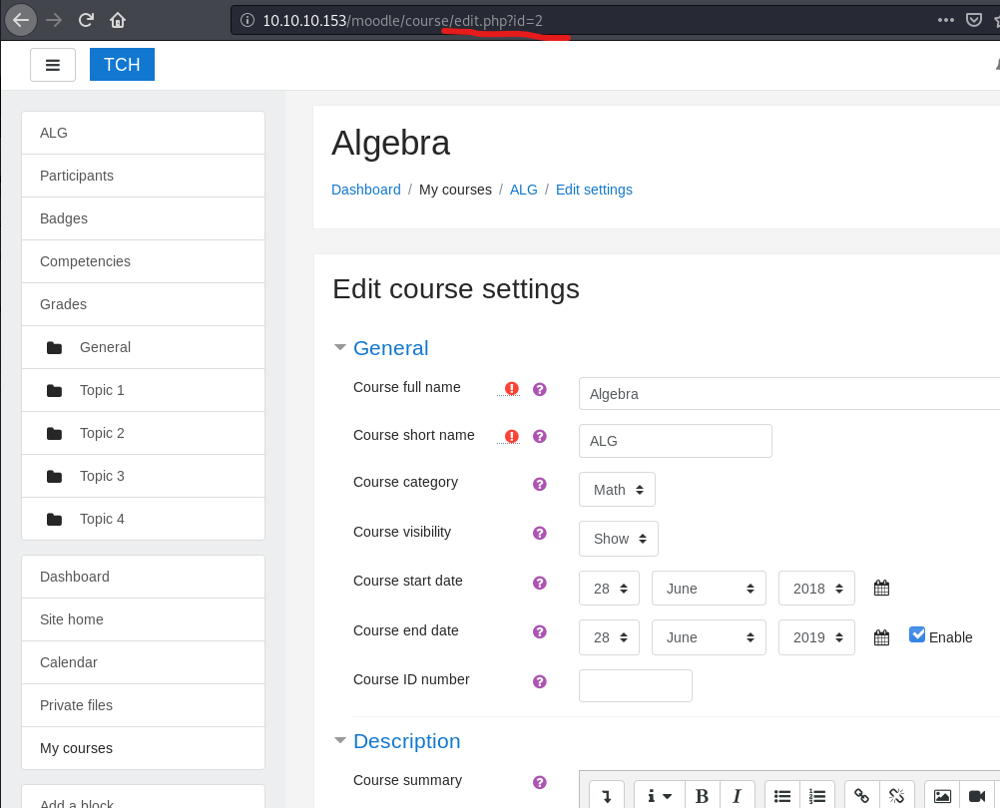

首先，依旧是nmap
只开了80，而且还有厚马
先扫一遍目录，扫到了一个moodle
百度出来是个cms，漏洞需要先登录进去，那再得找找
在gallery里发现一张图片一直没加载出来，下来来看一下
f**k，有点脑洞题那味了，hint藏成图片

简单爆破密码，登进去，脚本要用的course_d能在修改课程那里的url里找到，如果脚本提示curl_init出错，那多半是curl跟php版本不配套，apt一个匹配的curl就OK。
poc拿到www-data的shell，进去看一眼config。
那正好，mysql登进去。
他的那个phpmyadmin不知道干啥用的，没法访问，数据库里也没东西。
拿数据库里的MD5破解一下，用户giovanni密码就是expelled
进去home目录下面有一个work文件夹，里面塞了一个奇怪的文件，还有他的备份
推测是备份脚本，拿pspy找一下
这个就是把work下面所有的设成777,那就不如做个软链接到/root/root.txt，试了下不行，没有访问权限。那就只能老老实实去改/etc/shadow去了。
改成和giovanni一样就ok